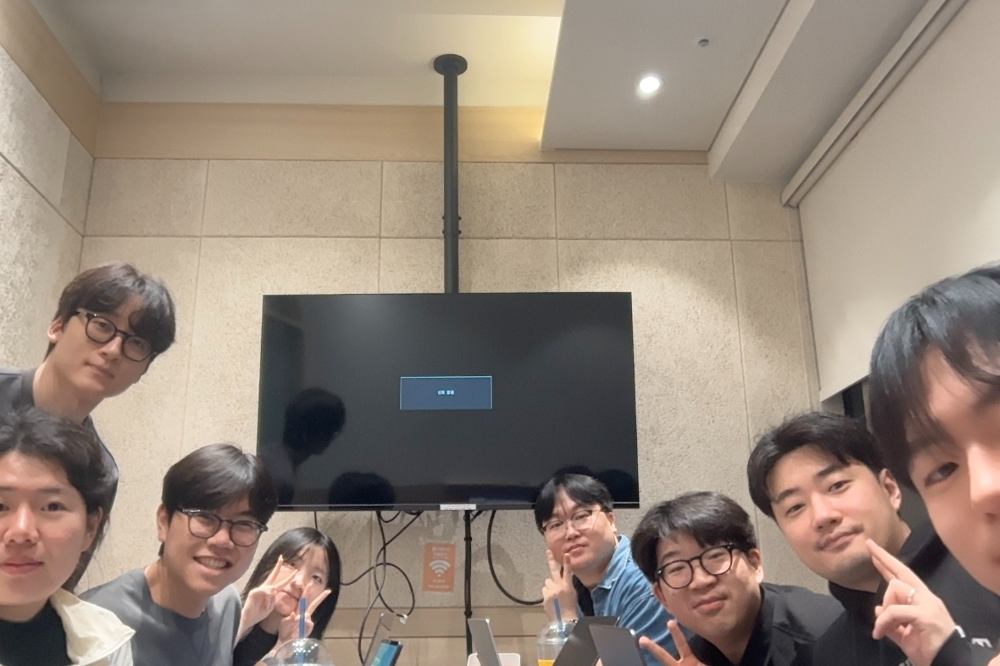
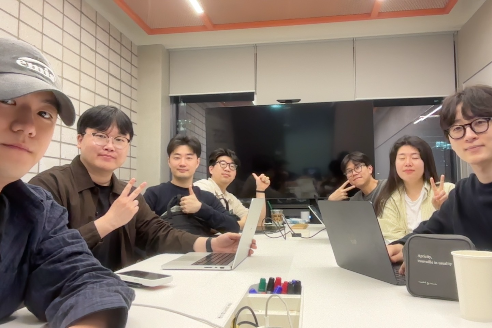
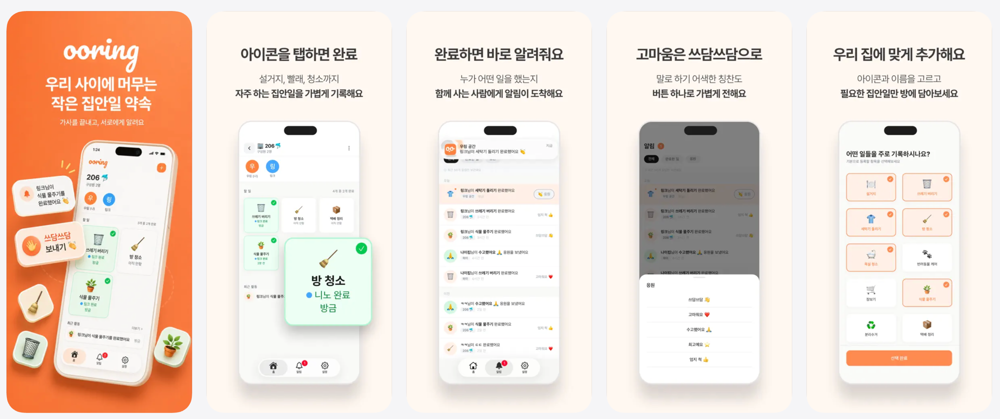
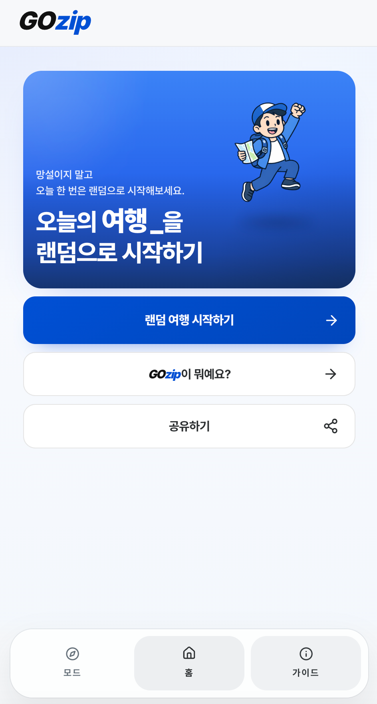
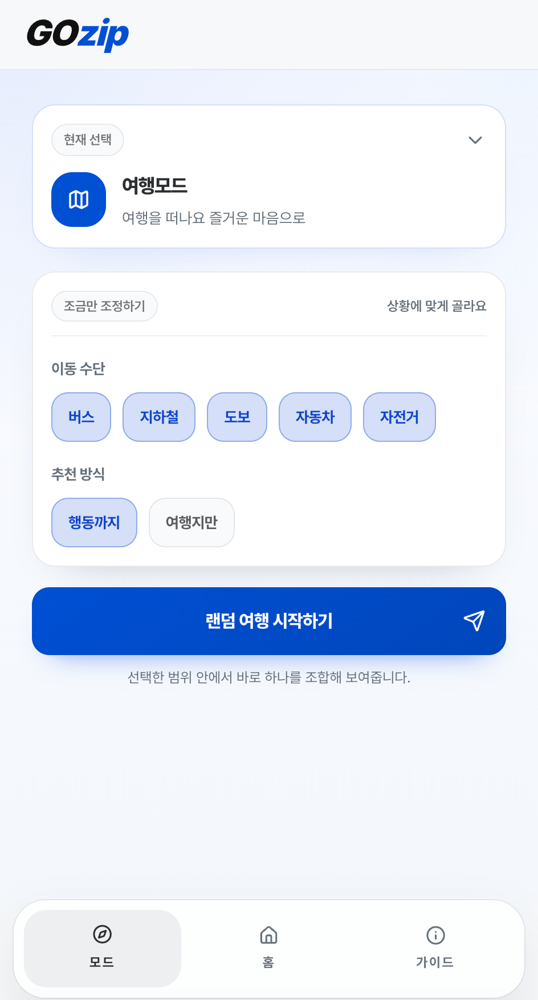
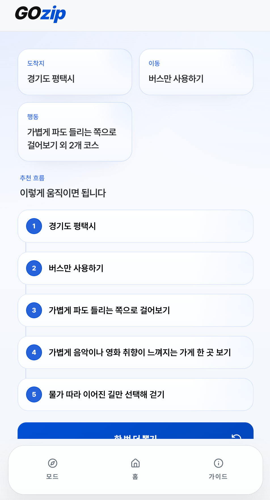
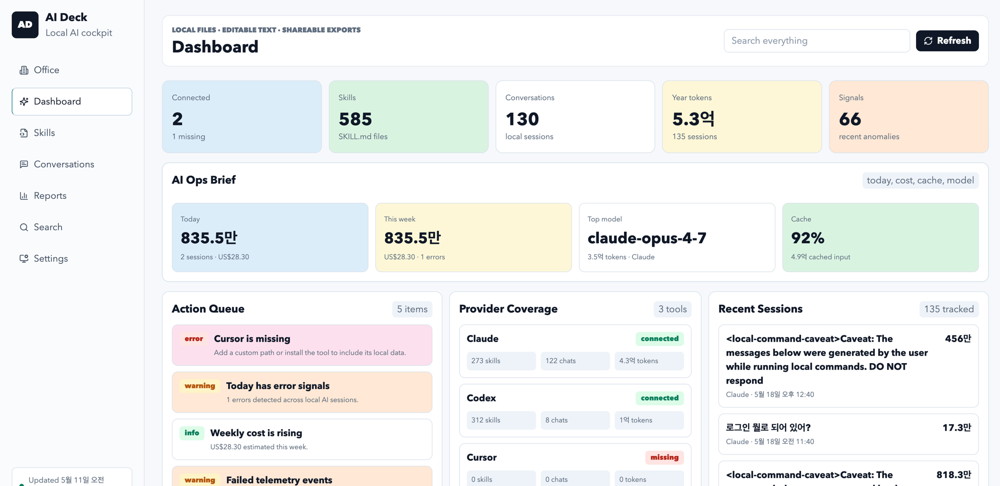
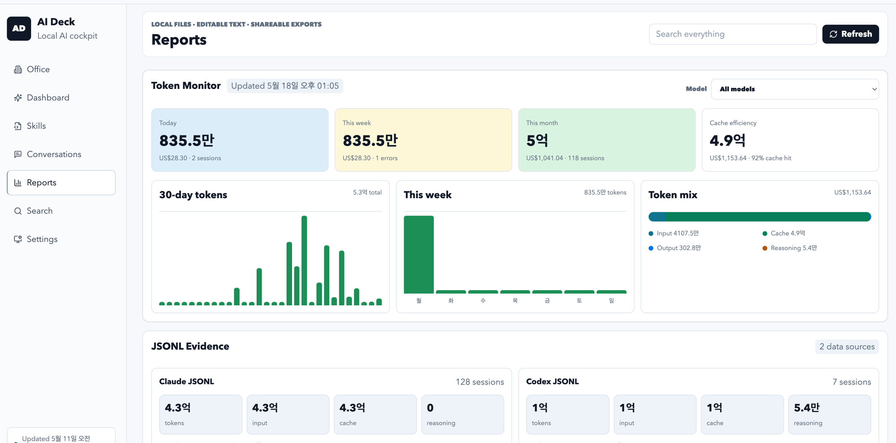
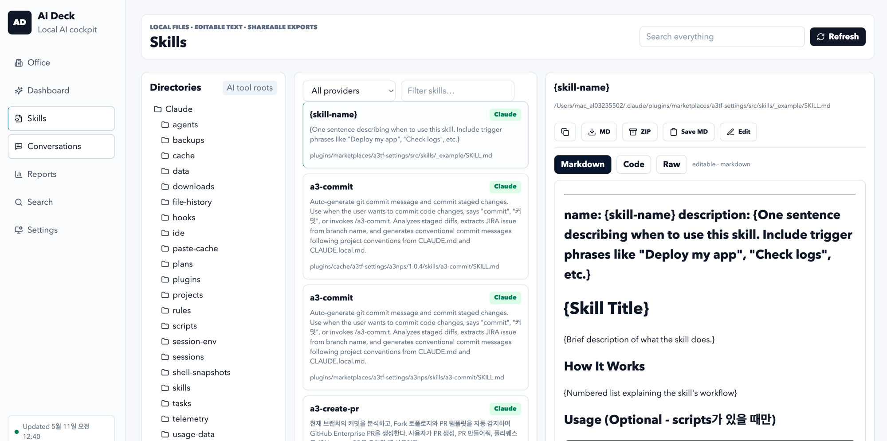

모닥랩
AI 에이전트 기반 개발 워크플로우
설계와 실습 C팀
5주간의 학습과 프로젝트 최종 공유
2026.05
오늘 발표 순서
- 01 팀원 소개
- 02 1~2주차 간단 리뷰
- 03 3~5주차 토이프로젝트
- 04 회고
C팀을 소개합니다
각자의 역할로 5주를 함께했어요


도현
출석체크
매주 출석 사진 담당
현우
서기
오늘 발표도 담당
영태
정리 담당
마무리 인사 & 다음주 일정
성민
아이스브레이킹
매주 분위기 메이커
수경
노티봇
스터디 알림 담당
인호
호스트
운영진 소통 & 스터디 기획
정호
온라인 방 열기
슬랙 허들 or 디스코드
승현
호스트의 호스트
인호님 뒤에서 든든하게
오늘 발표는 제가 하겠습니다
원래는 호스트분이 발표를 해야 되지만...
- 인호님이 취업 & 적응으로 정신없이 바쁜 상황
- 한 번쯤 발표해보고 싶었던 김에 대타로 자원했습니다
1~2주차 — 이런 걸 배웠어요
같은 학습을 출발점으로 삼았지만, 각자 다른 문제를 풀며 프로젝트로 연결했습니다
하네스, MCP, KB, 문서화, 멀티 에이전트 같은 공통 언어를 먼저 익히고 각자에게 맞는 작업 흐름으로 가져갔습니다.
누군가는 서비스 MVP를, 누군가는 개인 툴을, 누군가는 AI 인프라를 만들면서 같은 학습이 다른 결과물로 확장됐습니다.
각자의 관심사가 달라서, 배운 것도 프로젝트도 결과물도 전부 다르게 나왔습니다
3~5주차 토이프로젝트
8명이 같은 스터디를 거쳤지만, 만드는 과정과 남긴 결과는 3가지 흐름으로 갈라졌어요
실제 사용자들에게
제공해볼 수 있는 서비스
문제를 정하고 빠르게 MVP를 구현한 뒤, 배포와 피드백까지 이어간 흐름
개인이 사용해보고 싶은
아이디어 기반 프로젝트
관심 있는 문제를 스스로 정의하고, 작은 실험으로 배움의 폭을 넓힌 흐름
AI를 더 잘 쓰기 위한
인프라 프로젝트
단발성 사용을 넘어서, 다음 작업에도 반복해서 쓸 수 있는 기반을 만든 흐름
Group 01 — 3~5주차 토이프로젝트
실제 서비스를
만들어 보다
인호 · 성민 · 영태
우링 (ooring)
룸메이트·가족·커플 간 가사 분담 공유 앱
- Paperclip으로 하루만에 MVP 완성 · iOS 배포 · 실사용자 운영 중
- 회원가입 없이 닉네임+기기 기반, 초대 코드로 공간 참여
- UX 디자이너 · CTO · QA 역할별 AI 에이전트 분업으로 개발
- iOS 26 Liquid Glass UI 대응, 실사용자 버그 신고 대응 중



gozip
랜덤 여행 & 이동 추천 서비스
- 지역·이동수단·액션을 조합해 즉흥 여행 시나리오 생성
- 여행 모드 / 신속 모드 / 거지 모드 / 랜덤 모드 4가지
- AI 없이 순수 배열 기반 — 빠르고 가벼운 프론트 단독 동작
- 관광 데이터 활용 공모전 출품 & 1차 MVP 배포 완료



시니어 구인구직 앱
60대 이상을 위한 일자리 매칭 서비스 (SilverWorker)
- 전화번호+OTP 로그인, 노동 강도 표시 등 시니어 맞춤 UX
- OpenCode 구현 + Claude & Gemini 멀티 AI PR 리뷰 — 단일 브랜치 전략
- Claude는 blocker/major/minor 세분화 비판 · Gemini는 보완적 시각
- Flutter + Firebase · 고용24 API 발급 대기 (현재는 목업 진행)
입력하세요
45초 후 재발송 가능
노동강도 낮음 · 연령우대
Group 02 — 3~5주차 토이프로젝트
필요한 걸
직접 만들어 써보다
도현 · 수경 · 정호
트레이딩 에이전트
코인 모의투자 실험
홈서버 + 로컬 LLM에 투자 판단 위임을 목표로 한 실험
- GPT·Claude에게 매수/매도 판단을 시키는 실험 — CSV/DB로 모의투자
- 백테스팅 신뢰성 한계 — GPT가 과거 시세를 이미 알고 있을 수 있음
- 실시간 환경 한계 — 빗썸 API IP 등록, 노트북 IP 변동, 회사망 차단
- LLM 없이 차트 기반도 손실 반복 → AI 맹신 금지, 장기 프로젝트로 전환
내 자소설닷컴
AI 기반 맞춤형 자기소개서 작성 · 관리 Obsidian Plugin
- Manyfast로 PRD/기능명세 자동 생성 — 기획 = 개발 체크리스트
- 내 경험 + 기업 분석(인재상·뉴스·직무공고·ESG)을 자동 매핑
- Firecrawl로 기업 정보 크롤링 → Claude API로 문항별 초안 생성
- Obsidian Community Plugin · Phase 1 MVP 4,700줄 구현 완료
유튜브 클립 자동화
+ BodyLog
영상 구간 자동 클립 도구 + 증상→행동→결과 추적 앱
- 키워드 입력 → HTML 위치 기반 영상 영역 탐지 → 클립 저장 (Chrome)
- 캡차 차단으로 완전 자동화 포기 → 사람이 재생 누르고 AI가 녹화하는 반자동
- BodyLog: "허리 통증 → 스트레칭 1시간마다 → 며칠 후 효과" 타임라인 추적
- QA 에이전트 도입 — 마우스 제어 충돌 해결하며 테스트 자동화 학습
Group 03 — 3~5주차 토이프로젝트
AI를 더 잘 쓰기 위한
인프라를 쌓다
현우 · 승현
AI 대시보드 + 출처 태그
+ 슬라이드 마스터
개인 AI 작업 흐름의 병목을 찾고, 신뢰도와 재사용성을 높이기 위해 직접 만든 운영 인프라
- 과정: 세션 로그와 토큰 사용량을 모아 어디서 시간이 새는지 먼저 보이게 만들었습니다
- 과정: 답변에 근거가 섞이는 문제를 줄이기 위해 출처 태그 체계를 별도로 설계했습니다
- 결과: slide-master로 대화형 슬라이드 deck 생성까지 자동화했고, 이 발표자료도 그 연장선에 있습니다
- 결과: Obsidian MCP를 붙여 개인 KB를 실제 작업 루프 안에서 다시 꺼내 쓰는 기반을 만들었습니다



AI LLM 위키
+ 자동 브리핑 봇
흩어진 지식을 AI가 자동 정리하는 개인 위키 시스템
- 뉴스·블로그 링크 → AI가 핵심 추출 → 위키 페이지로 자동 정리
- Obsidian backlink 구조 참고 + Graphify로 관계 그래프 자동 생성
- 크론 기반 오늘의 브리핑/피드 생성, Telegram·CLI에서 호출
- 실제 배포 & 운영 중 (MCP write/read · SSE 연결)
5주를 돌아보며
인호
전에는 AI를 가져다 쓰는 데만 급급했다면, 이번 스터디를 통해 정보를 직접 찾고 최신 기술 동향을 익히는 법을 배웠어요. 덕분에 좋은 일들도 많이 생겨 참 행복한 5주였습니다.
도현
AI를 마냥 맹신해서는 안 되지만, 잘만 쓴다면 원하는 대로 동작시키는 데 큰 도움이 될 것 같습니다. 팀원분들께 AI 활용법을 많이 배웠어요.
현우
다양한 직군과 방향성을 가진 분들과 의견을 나눌 수 있어서 좋았습니다. 각자 관심 영역이 달라서 그 영역별로 새로운 방법과 관점을 배워갈 수 있었어요. 스터디 하길 잘했다.
영태
게임 개발에서 AI 에이전트를 올바르게 활용하는지 고민이 있었는데, 다양한 분들의 다양한 활용 방법을 얻고 갈 수 있어서 좋았습니다.
수경
다양한 인사이트를 얻을 수 있었고, 다른 분들이 AI를 활용하는 방법을 구경할 수 있어서 너무 좋았습니다. 디벨롭할 수 있는 아이디어를 얻을 수 있어서 감사해요.
정호
특정 부분을 깊게 학습했다기보다 여러 활용법이 있다는 걸 배우고 각각 조금씩 써보며 느낌을 파악할 수 있어 좋았습니다. 더 열심히 잘 써야겠다는 걸 느꼈어요.
성민
AI가 저보다 코드 작성 능력이 뛰어나니 조금 더 믿어보는 게 좋겠고, AI가 작성한 것을 어떻게 더 잘 검토할 수 있을지를 중점으로 발전시켜나가면 좋을 것 같습니다.
승현
저와 다른 환경에 있는 분들의 제각각의 경험과 해결 방법을 공유할 수 있어서 정말 도움이 많이 되었습니다. 앞으로도 같이 종종 모이면서 공유하는 시간이 있으면 좋겠어요.
AI 에이전트 기반 개발 워크플로우 설계와 실습 C팀
감사합니다
과정을 쌓아 결과로 만들었고, 이제 그 결과를 다음 실험의 시작점으로 씁니다